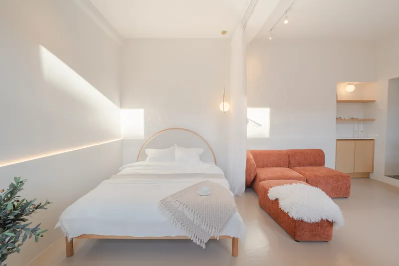
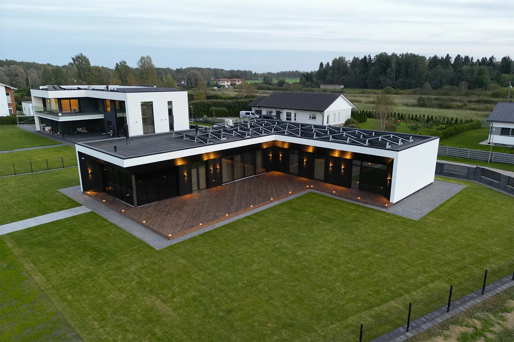

Millal kodu pildistada: kellaaeg, ilm ja aastaaeg
Lühivastus
Sisefotod tulevad kõige paremini keskpäeva paiku, kui valgust on palju ja ta on ühtlane. Välisfotod sõltuvad sellest, mis ilmakaarde fassaad vaatab. Pilves ilm ei riku sisefotosid peaaegu üldse – ta on probleem ainult väljas, ja sedagi lahendatavat sorti.
Eestis on valgus aastaringselt väga ebavõrdselt jaotunud. Detsembris on Tartus valget aega umbes kuus tundi, juunis üle kaheksateistkümne. See tähendab, et sama pildistamine on suvel lihtne ja jaanuaris planeerimisülesanne.
Sisefotod: keskpäev võidab
Toa sees on päikesevalgus peamiselt kaudne – ta tuleb aknast sisse ja põrkab pindadelt. Mida kõrgemal päike, seda rohkem valgust ruumi jõuab ja seda ühtlasemalt see jaotub.
Praktiline aken:
| Aeg | Sisefotode aken |
|---|---|
| Mai–august | umbes 9–19 |
| Märts–aprill, september–oktoober | umbes 10–16 |
| November–veebruar | umbes 11–14 |
Talvel on aken kitsas, aga ta on olemas. Sellepärast lepitakse talvel pildistamised kokku päeva keskele ja mitte hommikusse.
Otsene päike aknas ei ole alati sõber. Kui päike paistab kaadris otse sisse, tekivad põrandale kõvad valguslaigud ja ülejäänud tuba jääb nende kõrval pimedaks. Kerge pilvisus on sisefotode jaoks sageli parem kui selge taevas.

Välisfotod: vaata, kuhu maja vaatab
Fassaad tahab valgust endale. Kui päike on maja taga, jääb sein varju ja taevas põleb üle. Seepärast sõltub õige kellaaeg täielikult sellest, mis suunas peafassaad on:
| Fassaad vaatab | Parim aeg |
|---|---|
| Itta | hommikupoolik |
| Lõunasse | keskpäev kuni varane pärastlõuna |
| Läände | pärastlõuna ja õhtu |
| Põhja | otsest päikest ei tulegi – pilves päev on isegi parem |
Hämarik: kakskümmend minutit aastas kõige väärtuslikumat valgust
Kohe pärast päikeseloojangut on taevas veel sinine, aga majas põlevad tuled juba. Selle vahe peal sünnib kaader, mille peale inimesed portaalis päriselt peatuvad.
Aken on lühike, umbes kakskümmend minutit. Selleks ajaks peavad kõik tuled majas põlema, kardinad lahti olema ja kaamera juba statiivil.

Aastaaeg
Eestis on aastaajal välisfotodele suurem mõju kui kellaajal.
- Mai–september. Roheline, pikk päev, ilus. Lihtsaim aeg maja müüa ja lihtsaim aeg fotosid teha.
- Oktoober–november. Lehed maas, hall taevas, aeda ei paista. Halvim välisaeg – aga sisefotod on täiesti korras.
- Detsember–veebruar. Puhta lumega on maja fotol väga hea välja näha. Poriga lumesulaga on ta halvem kui novembris.
- Märts–aprill. Kollane muru ja paljad puud. Töötab, kui hoida horisont madalal ja anda kaadris rohkem ruumi majale.
Kui müük venib üle aastaaja. Talvel tehtud välisfoto reedab kevadel, et objekt on kaua müügis olnud. Kui kuulutus on üleval üle poole aasta, tasub üks värske väliskaader teha – see maksab vähe ja uuendab kogu kuulutuse mulje.
Mida teha, kui ilm ei mängi kaasa
Meie praktikas on lahendus lihtne ja seda ei pea kartma: sisefotod tehakse ära ja välisvõtete jaoks lepitakse uus aeg. Sisemine osa ei sõltu ilmast peaaegu üldse, nii et kuulutus saab niikuinii üles minna ja välisfotod lisanduvad hiljem.
Vihmase või hallilt kaetud taeva puhul aitab veel kaks asja: hoida horisont kaadris madalal, nii et taevast oleks vähem, ja pildistada maja lähemalt, nii et raamiks jääks pigem hoone kui ümbrus.
Sama küsimus on ka meie korduma kippuvate küsimuste all – seal on kirjas, kuidas me halva ilmaga praktikas käitume.
Lepime aja kokku vastavalt sellele, kuhu su kodu aknad vaatavad. Korterid alates 85€, eramajad alates 109€, pildid käes 48 tunniga.
Võta ühendust